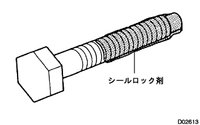
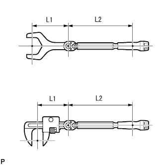
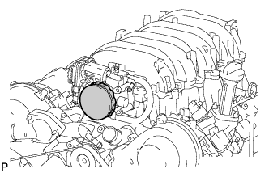
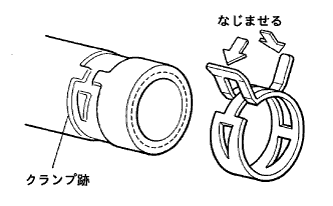

Engine Section Work Guidelines and Precautions Precautions |
Foreign matter such as dust, sand or metal particles entering the engine will cause malfunctions.
Thoroughly remove sand, mud, etc. from the outside of the engine.
Protect disassembled parts from dust with vinyl covers, etc.
Scratches on the contact surfaces or rotating parts may cause oil leaks or seizure.
When separating contact surfaces of parts, do not pry them apart with a screwdriver, etc.; tap them lightly with a plastic-faced hammer to separate them.
When securing parts in a vise, do not clamp them directly; use aluminum plates in between.
Thoroughly clean each part before assembly, dry it with compressed air, etc., and apply the specified oil.
Parts that must not be cleaned with alkaline chemicals
Aluminum parts, rubber parts (cylinder head cover gasket, etc.)
Parts that must not be cleaned with cleaning solvent (kerosene, white gasoline, etc.)
Rubber parts (cylinder head cover gasket, etc.)
Install each part in the same position and direction as before disassembly.
When the text instructs you to place matchmarks or direction marks before disassembly, always follow the instructions.
Arrange disassembled parts in the order of disassembly so that their installation positions and directions are not changed.
When the text specifies installation positions and directions, always follow the instructions.
 |
Precoated Bolts
Precoated bolts are bolts with seal lock adhesive applied to the threads.
When a precoated bolt is retightened, loosened or moved, recoat it with the specified adhesive.
When reusing precoated parts, remove the old adhesive from the bolt and bolt hole, degrease them with white gasoline, etc., and dry them with compressed air. Then apply the specified seal lock adhesive to the bolt threads and tighten to the specified torque.
Depending on the seal lock adhesive used, it may be necessary to leave it for a specified time until it hardens.
Gasket
Use sealant on gaskets as necessary to prevent leaks.
Bolts, Nuts and Screws
Check the torque specifications of bolts, nuts and screws, and always use a torque wrench.
Tightening When Using a Torque Wrench Extension Tool
 |
When an SST or tool is combined with a torque wrench to extend its overall length, tightening until the torque wrench reading reaches the specified torque will result in excessive actual torque.
Only the specified torque is given in the text. When using an SST or extension tool, calculate the torque wrench reading using the formula.
Formula T'=T×L2/(L1+L2)
| T' | Torque Wrench Reading [N·m [kgf·cm]] |
| T | Specified Torque [N·m [kgf·cm]] |
| L1 | Length of SST or Tool [cm] |
| L2 | Length of Torque Wrench [cm] |
Work Area for Removing/Installing Fuel System Parts
Work in a well-ventilated area that is free of welders, grinders, drills, electric motors, stoves and other sources of ignition.
Do not work in or near a pit where vaporized fuel may accumulate.
Removal / Installation of Fuel System Parts
Prepare a fire extinguisher before starting work.
To prevent static electricity, connect ground wires to the fuel changer, vehicle, fuel tank, etc., and sprinkle water on the floor just enough to keep it from becoming slippery.
Do not use electric pumps, work lights or other electrical equipment, as they may produce sparks or become hot.
Do not use steel hammers, etc., as they may produce sparks during work.
Dispose of fuel-soaked shop rags separately.
 |
If metal particles or other foreign matter enter the intake passage, they may adversely affect the engine, etc.
When removing/installing intake system parts, cover the removed intake system parts and the openings on the engine side with clean shop rags or packing tape.
When installing intake system parts, make sure that no metal particles or other foreign matter have entered.
 |
Before removing a hose, check the hose insertion depth and clamp position so that they can be reliably restored.
Replace any deformed or weakened clamp with a new one.
When reusing a hose, install the clamp aligned with the clamp mark on the hose.
After installing a leaf spring type clamp, apply force in the direction of the arrow to seat it.